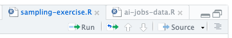
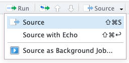

Sampling Exercise Review
You can download the .R file and data file here:
Sampling Exercise Review
In class we wrote some code to analyse our samples in a .R file named sampling-exercise.R. This is useful to save and quickly run a full script (set of many lines of code to perform one or many actions). You can take a look at a completed version of the file we looked at in class which I have written.
.R files are the basis of saving, running, and sharing R code - this is what all of the packages we’ve been loading and using functions from use to write their code. They let you move out of the console where each line is temporary and begin to build up more complicated workflows and analyses.
In this file, we will take the next step into a system called Quarto. Whereas .R files are pure R code - everything written in them will execute as a command when you run it - a Quarto .qmd file allows you to mix together R code, text, and outputs like tables and plots. This is how we can actually communicate our analysis!
Outline
In this page, we will:
Review what an
.Rfile is and how to use it.Introduce Quarto documents
.qmdand use one to step through and explain the sampling exercise code we wrote in class.Show off what Quarto can do by extending our sampling code.
Saving and running code in a .R script
Before diving into how a Quarto document works, let’s review how .R files work:
A .R script works very much like running single lines of code in the console - it will run each line in order from top to bottom. If you run it from RStudio it will even echo the lines of code into the console so you can track exactly what is happening.
By saving your code in a .R file you can:
Save your code rather than needing to type it or copy/paste it into the console line by line.
Build up a full script to perform several actions at once.
For instance, to prepare the AI Jobs dataset we looked at in class, I wrote a script to download the data, clean it, and make some adjustments, then save it to a .csv file. Rather than write this each time, I can just
sourcetheai-jobs-data.Rscript to do it all at once.You can see all the steps of that code in the
ai-jobs-data.Rfile. Try to look through the code and identify the blocks of code that logically fit together - in other words, the multiple lines of code which are grouped together because they do the same thing or because they form one step of the process. I have added comments to outline these for you. Even if you don’t know what every line or function does, you should be able to follow the logical flow of what the code does.
So, in our sampling-exercise.R file we completed a few logical steps:
First, we need to load the
tidyverselibrary in order to access our standard data processing functions:library(tidyverse)Then, we input the observations from each sample we took and saved them to a
sample_xvariable. These are all lists (usingc()) of 10 numbers.sample_1 <- c(83.2, 82.6, 82.6, 82.6, 93.2, 94, 94, 48.5, 33.6, 33.6) sample_2 <- c(88, 48, 23, 23, 23, 23, 23, 23, 23, 23) # etc. ...Next, we calculated the means for each sample. I showed two ways of doing this, let’s look at just the first for now.
We calculated the mean of the list of numbers of each sample:
mean_1 <- mean(sample_1) mean_2 <- mean(sample_2) # etc. ...Then we put these means together into a table:
sample_means <- tibble(mean_values = c(mean_1, mean_2, ...))This gives us a table with one row for each sample we took and a column named
mean_valueswhich contains the means we calculated:mean_values1 72.8 2 32 … …
This is where we stopped in class, but compare the steps I just outlined with the code you wrote in your own .R file and you should be able to identify these logical blocks of code.
By ‘sourcing’ the file, we can run this all at once and either print out our sample_means table, or take a look at it within RStudio.
Workflow for a .R file

RStudio gives you some useful tools for when you are writing an .R file.
To run the whole file (what we call ‘source’-ing the file, you can press the ‘Source’ button at the top right.
By default, this will print out just the filepath to your console (e.g.
source("~/Documents/UCL/Teaching/BSSC0021_25/Code/Week4/sampling-exercise.R")) and display any outputs like plots.If you select the arrow next to it, you can choose ‘Source with Echo’. This will print out each row of code to the console (or ‘echo’ it) as the code runs. This is useful if you want to check exactly what is happening.

By selecting only certain rows and clicking the ‘Run’ button, RStudio will run only those lines of code. This is very useful as you are writing your code and building up a full script. You can check what each part does as you go without needing to run the whole file at once.
A suggested workflow for writing a script is to move back and forth between the .R file editor and the console. Build your code up in the .R file and run each logical chunk of code as you write it to make sure it works the way you expect.
Anything that you need to run which is temporary or a one-off, type this directly in the console (like if you need to look at the help page for a function such as mean, you would run ?mean in the console to bring it up).
Hint: To repeat a previously run line of code in the console, press the up arrow - this will cycle back through the history of commands you have run. Once you get to the one you want, just press enter to run it again.
Once you have a few chunks of code in the .R file, you can run ‘Source’ to check that the whole thing works top to bottom.
Communicating Analysis
In the next section we will introduce Quarto, a system for creating professional looking documents with R. Quarto gives us the power to perform and communicate our analysis, all in one! It’s also how I’ve written all of the presentations and notes for this module (including this page).
We’ll introduce it by writing a Quarto document which explains each line of our sampling exercise code.
Appendix
sampling-exercise.R :
# Load the tidyverse package
# This will provide us with functions like `tibble`, `gather`, `group_by`, `summarise`, `ggplot`, etc.
library(tidyverse)
# Input the values of the samples
sample_1 <- c(83.2, 82.6, 82.6, 82.6, 93.2, 94, 94, 48.5, 33.6, 33.6)
sample_2 <- c(48.8, 86.5, 67.5, 84.5, 97.6, 92, 60.7, 108, 84.3, 58.5)
sample_3 <- c(128, 53.7, 70.9, 75.2, 84.9, 91.2, 70.2, 82, 88.8, 82)
sample_4 <- c(122, 54, 101, 93.2, 89.4, 64.9, 68.3, 97.7, 77.7, 123)
sample_5 <- c(92.2, 82, 97.7, 48.5, 94, 70.6, 105, 60.7, 65.1, 82.3)
sample_6 <- c(91.2, 110, 57.7, 48.4, 122, 65.5, 86.5, 62.7, 62.7, 85.6)
sample_7 <- c(87.5, 72.8, 84.8, 56.5, 64.9, 42.2, 62.8, 54.1, 84.4, 89.7)
sample_8 <- c(78.8, 48.5, 54, 70.4, 43.8, 65.5, 78.8, 43.8, 113, 123)
sample_9 <- c(89.5, 125, 94, 92.4, 70, 99, 111, 96.9, 64.2, 63.7)
sample_10 <- c(102, 90.8, 110, 123, 79.4, 77.9, 82.3, 92.6, 90.8, 113)
sample_11 <- c(86.6, 83, 58.9, 101, 54.9, 96.8, 84.8, 60.4, 84, 83.3)
sample_12 <- c(63.7, 102, 84.3, 54.1, 71.6, 122, 40.8, 63.7, 84.4, 90.9)
sample_13 <- c(123, 93.5, 68.3, 97.3, 53.1, 50.2, 130, 48.5, 56.5, 65.1)
sample_14 <- c(109, 85.6, 54.9, 62.7, 30.3, 87.1, 94, 111, 54.1, 54.3)
sample_15 <- c(109, 44.2, 99.3, 58.5, 77, 86.2, 125, 128, 79.1, 98.2)
sample_16 <- c(41.8, 122, 70.6, 86.3, 83.7, 84.3, 82.9, 41.3, 72.7, 98.2)
sample_17 <- c(63.7, 89.8, 101, 70.2, 68.4, 77.9, 105, 53.1, 112, 55.8)
sample_18 <- c(48.8, 86.5, 67.5, 84.5, 97.6, 92, 60.7, 108, 84.3, 58.5)
sample_19 <- c(92.6, 82.3, 57.1, 57.1, 82, 62.7, 62.7, 82, 82, 77)
sample_20 <- c(67, 64.5, 87.8, 84.5, 43.8, 67.2, 30.3, 107, 85.2, 67.2)
sample_21 <- c(66.8, 85.6, 123, 109, 97.7, 89.7, 51.9, 48.5, 81.7, 51.9)
sample_22 <- c(97.1, 85.2, 118, 56.5, 91.2, 91.8, 59.3, 111, 93.2, 75.9)
sample_23 <- c(111, 64.4, 137, 82.3, 94, 64.9, 39, 75.2, 91.2, 63.8)
sample_24 <- c(97.7, 50.2, 78.8, 119, 109, 119, 40.8, 72.8, 97.1, 102)
sample_25 <- c(58.9, 79.8, 91.8, 56.5, 46.1, 84.4, 71.2, 71.2, 86.2, 70.6)
sample_26 <- c(75.8, 73.8, 57.7, 129, 101, 71.2, 137, 135, 60.3, 77)
sample_27 <- c(56.5, 52.3, 99.3, 107, 75.9, 89.2, 70, 84.3, 66.8, 93.5)
sample_28 <- c(28.3, 90.8, 39, 82.3, 89.5, 58.1, 120, 74.7, 28.8, 117)
sample_29 <- c(97.7, 85.4, 91.1, 54.1, 109, 102, 82, 90.8, 63.7, 92.3)
sample_30 <- c(101, 68.3, 62.8, 65.5, 75.8, 93.8, 81.7, 72.8, 63.4, 109)
# Create a table with the samples and an id column
data <- tibble(
sample_1, sample_2, sample_3, sample_4, sample_5,
sample_6, sample_7, sample_8, sample_9, sample_10,
sample_11, sample_12, sample_13, sample_14, sample_15,
sample_16, sample_17, sample_18, sample_19, sample_20,
sample_21, sample_22, sample_23, sample_24, sample_25,
sample_26, sample_27, sample_28, sample_29, sample_30
) |>
gather(key = "sample", value = "value")
data # Look at the table
# Calculate the mean of each sample
sample_means <- data |>
group_by(sample) |>
summarise(mean = mean(value))
sample_means # Look at the means
#
# # Plot the sampling distribution
#
ggplot(sample_means, mapping = aes(x = mean)) +
geom_histogram() +
theme_minimal()